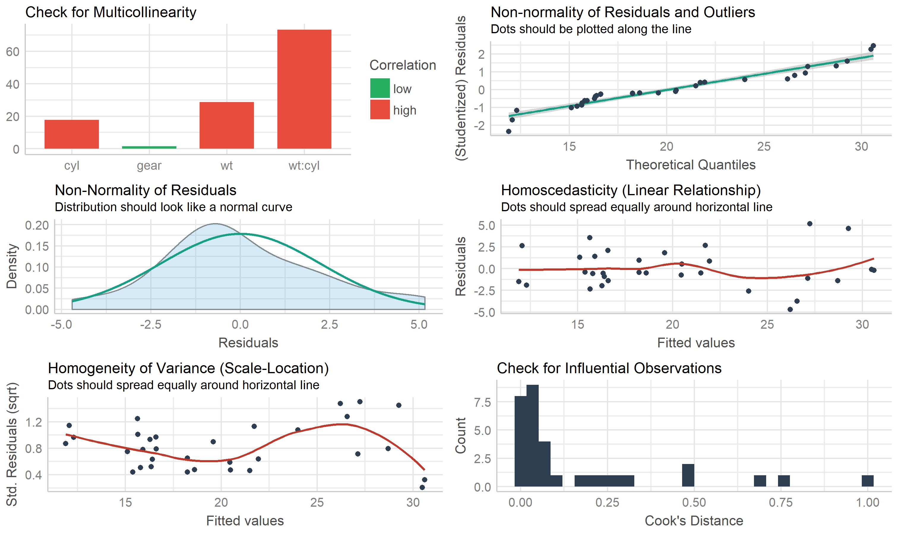
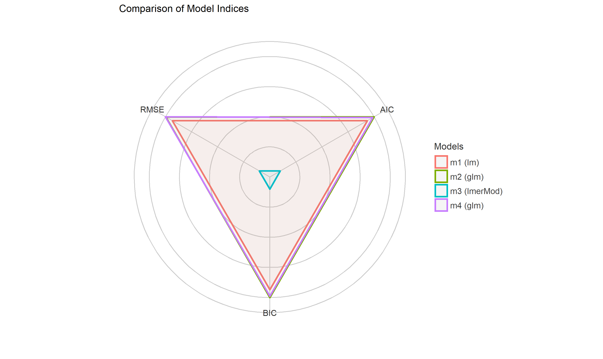

Test if your model is a good model!
The primary goal of the performance package is to provide utilities for computing indices of model quality and goodness of fit. This includes measures like r-squared (R2), root mean squared error (RMSE) or intraclass correlation coefficient (ICC) , but also functions to check (mixed) models for overdispersion, zero-inflation, convergence or singularity.
Examples


Assessing model quality
R-squared
performance has a generic r2() function, which computes the r-squared for many different models, including mixed effects and Bayesian regression models.
r2() returns a list containing values related to the “most appropriate” r-squared for the given model.
model <- lm(mpg ~ wt + cyl, data = mtcars)
r2(model)
#> # R2 for Linear Regression
#>
#> R2: 0.830
#> adj. R2: 0.819
model <- glm(am ~ wt + cyl, data = mtcars, family = binomial)
r2(model)
#> $R2_Tjur
#> Tjur's R2
#> 0.7051
library(MASS)
data(housing)
model <- polr(Sat ~ Infl + Type + Cont, weights = Freq, data = housing)
r2(model)
#> $R2_Nagelkerke
#> Nagelkerke's R2
#> 0.1084The different r-squared measures can also be accessed directly via functions like r2_bayes(), r2_coxsnell() or r2_nagelkerke() (see a full list of functions here).
For mixed models, the conditional and marginal r-squared are returned. The marginal r-squared considers only the variance of the fixed effects and indicates how much of the model’s variance is explained by the fixed effects part only. The conditional r-squared takes both the fixed and random effects into account and indicates how much of the model’s variance is explained by the “complete” model.
For frequentist mixed models, r2() (resp. r2_nakagawa()) computes the mean random effect variances, thus r2() is also appropriate for mixed models with more complex random effects structures, like random slopes or nested random effects (Johnson 2014; Nakagawa, Johnson, and Schielzeth 2017).
library(rstanarm)
model <- stan_glmer(Petal.Length ~ Petal.Width + (1 | Species),
data = iris, cores = 4)
r2(model)
#> # Bayesian R2 with Standard Error
#>
#> Conditional R2: 0.953 [0.006]
#> Marginal R2: 0.825 [0.042]
library(lme4)
model <- lmer(Reaction ~ Days + (1 + Days | Subject), data = sleepstudy)
r2(model)
#> # R2 for Mixed Models
#>
#> Conditional R2: 0.799
#> Marginal R2: 0.279Intraclass Correlation Coefficient (ICC)
Similar to r-squared, the ICC provides information on the explained variance and can be interpreted as “the proportion of the variance explained by the grouping structure in the population” (Hox 2010).
icc() calculates the ICC for various mixed model objects, including stanreg models.
library(lme4)
model <- lmer(Reaction ~ Days + (1 + Days | Subject), data = sleepstudy)
icc(model)
#> # Intraclass Correlation Coefficient
#>
#> Adjusted ICC: 0.722
#> Conditional ICC: 0.521For models of class brmsfit, an ICC based on variance decomposition is returned (for details, see the documentation).
icc(model)
#> # Random Effect Variances and ICC
#>
#> Conditioned on: all random effects
#>
#> ## Variance Ratio (comparable to ICC)
#> Ratio: 0.39 CI 95%: [-0.55 0.78]
#>
#> ## Variances of Posterior Predicted Distribution
#> Conditioned on fixed effects: 22.69 CI 95%: [ 8.42 58.44]
#> Conditioned on rand. effects: 37.71 CI 95%: [25.06 55.58]
#>
#> ## Difference in Variances
#> Difference: 14.29 CI 95%: [-19.67 35.40]Model diagnostics
Check for overdispersion
Overdispersion occurs when the observed variance in the data is higher than the expected variance from the model assumption (for Poisson, variance roughly equals the mean of an outcome). check_overdispersion() checks if a count model (including mixed models) is overdispersed or not.
library(glmmTMB)
data(Salamanders)
model <- glm(count ~ spp + mined, family = poisson, data = Salamanders)
check_overdispersion(model)
#> # Overdispersion test
#>
#> dispersion ratio = 2.946
#> Pearson's Chi-Squared = 1873.710
#> p-value = < 0.001
#> Overdispersion detected.Overdispersion can be fixed by either modelling the dispersion parameter (not possible with all packages), or by choosing a different distributional family [like Quasi-Poisson, or negative binomial, see (Gelman and Hill 2007).
Check for zero-inflation
Zero-inflation (in (Quasi-)Poisson models) is indicated when the amount of observed zeros is larger than the amount of predicted zeros, so the model is underfitting zeros. In such cases, it is recommended to use negative binomial or zero-inflated models.
Use check_zeroinflation() to check if zero-inflation is present in the fitted model.
model <- glm(count ~ spp + mined, family = poisson, data = Salamanders)
check_zeroinflation(model)
#> # Check for zero-inflation
#>
#> Observed zeros: 387
#> Predicted zeros: 298
#> Ratio: 0.77
#> Model is underfitting zeros (probable zero-inflation).Check for singular model fits
A “singular” model fit means that some dimensions of the variance-covariance matrix have been estimated as exactly zero. This often occurs for mixed models with overly complex random effects structures.
check_singularity() checks mixed models (of class lme, merMod, glmmTMB or MixMod) for singularity, and returns TRUE if the model fit is singular.
library(lme4)
data(sleepstudy)
# prepare data
set.seed(123)
sleepstudy$mygrp <- sample(1:5, size = 180, replace = TRUE)
sleepstudy$mysubgrp <- NA
for (i in 1:5) {
filter_group <- sleepstudy$mygrp == i
sleepstudy$mysubgrp[filter_group] <- sample(1:30, size = sum(filter_group),
replace = TRUE)
}
# fit strange model
model <- lmer(Reaction ~ Days + (1 | mygrp/mysubgrp) + (1 | Subject),
data = sleepstudy)
check_singularity(model)
#> [1] TRUERemedies to cure issues with singular fits can be found here.
Comprehensive model check
performance provides many functions to check model assumptions, like check_collinearity(), check_normality() or check_heteroscedasticity(). To get a comprehensive check, use check_model().
model <- lm(mpg ~ wt * cyl + gear, data = mtcars)
check_model(model)
Model performance summaries
model_performance() computes indices of model performance for regression models. Depending on the model object, typical indices might be r-squared, AIC, BIC, RMSE, ICC or LOOIC.
Linear model
m1 <- lm(mpg ~ wt + cyl, data = mtcars)
model_performance(m1)| AIC | BIC | R2 | R2_adjusted | RMSE |
|---|---|---|---|---|
| 156 | 161.9 | 0.83 | 0.82 | 2.44 |
Logistic regression
m2 <- glm(vs ~ wt + mpg, data = mtcars, family = "binomial")
model_performance(m2)| AIC | BIC | R2_Tjur | RMSE | LOGLOSS | SCORE_LOG | SCORE_SPHERICAL | PCP |
|---|---|---|---|---|---|---|---|
| 31.3 | 35.7 | 0.48 | 0.89 | 0.4 | -14.9 | 0.09 | 0.74 |
Linear mixed model
library(lme4)
m3 <- lmer(Reaction ~ Days + (1 + Days | Subject), data = sleepstudy)
model_performance(m3)| AIC | BIC | R2_conditional | R2_marginal | ICC | RMSE |
|---|---|---|---|---|---|
| 1756 | 1775 | 0.8 | 0.28 | 0.72 | 23.44 |
Comparing different models
counts <- c(18, 17, 15, 20, 10, 20, 25, 13, 12)
outcome <- gl(3, 1, 9)
treatment <- gl(3, 3)
m4 <- glm(counts ~ outcome + treatment, family = poisson())
compare_performance(m1, m2, m3, m4)
#> # Comparison of Model Performance Indices
#>
#> Model | Type | AIC | BIC | RMSE | SCORE_LOG | SCORE_SPHERICAL | R2 | R2_adjusted | R2_Tjur | LOGLOSS | PCP | R2_conditional | R2_marginal | ICC | R2_Nagelkerke
#> -------------------------------------------------------------------------------------------------------------------------------------------------------------------------------
#> m1 | lm | 156.01 | 161.87 | 2.44 | | | 0.83 | 0.82 | | | | | | |
#> m2 | glm | 31.30 | 35.70 | 0.89 | -14.90 | 0.10 | | | 0.48 | 0.40 | 0.74 | | | |
#> m3 | lmerMod | 1755.63 | 1774.79 | 23.44 | | | | | | | | 0.80 | 0.28 | 0.72 |
#> m4 | glm | 56.76 | 57.75 | 0.76 | -2.60 | 0.32 | | | | | | | | | 0.66Comparing different models, ordered by model performance
compare_performance(m1, m2, m3, m4, rank = TRUE)
#> # Comparison of Model Performance Indices
#>
#> Model | Type | AIC | BIC | RMSE | Performance_Score
#> ---------------------------------------------------------------
#> m2 | glm | 31.30 | 35.70 | 0.89 | 99.80%
#> m4 | glm | 56.76 | 57.75 | 0.76 | 99.09%
#> m1 | lm | 156.01 | 161.87 | 2.44 | 92.69%
#> m3 | lmerMod | 1755.63 | 1774.79 | 23.44 | 0.00%
#>
#> Model m2 (of class glm) performed best with an overall performance score of 99.80%.plot(compare_performance(m1, m2, m3, m4, rank = TRUE))